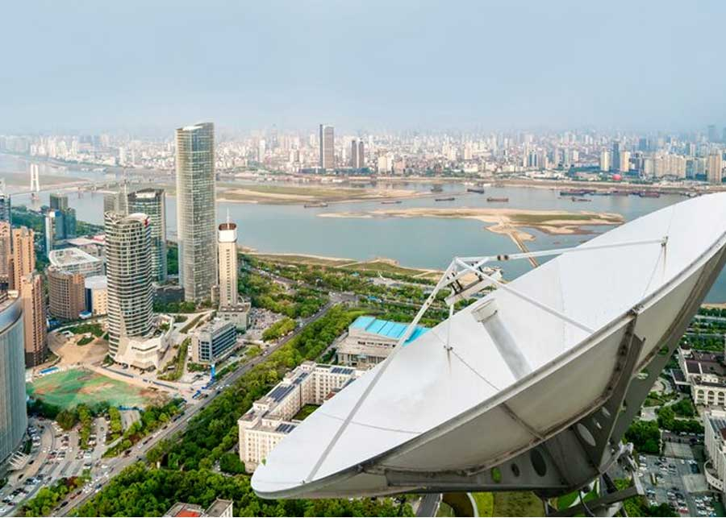

MATV (Master Antenna Television) Systems in Majal IT Networks & Security
In today’s modern commercial buildings, residential complexes, hotels, and healthcare facilities, reliable and high-quality television distribution is no longer a luxury—it is an essential requirement. Master Antenna Television (MATV) systems play a central role in delivering signal clarity and high-definition content to hundreds or thousands of viewing points from a single central headend. Majal IT Networks & Security is at the forefront of designing, supplying, installing, and maintaining robust MATV architectures across Saudi Arabia, ensuring that every screen receives flawless broadcast and satellite signals.
Our MATV solutions are engineered to consolidate multiple signal sources, including digital terrestrial television (DVB-T/T2), satellite television (DVB-S/S2), and local video channels, into a single, unified distribution network. By leveraging top-tier equipment such as high-gain antennas, satellite dishes, low-noise block downconverters (LNBs), high-performance multiswitches, amplifiers, and high-shielding coaxial or fiber-optic cabling, we eliminate signal degradation and external electromagnetic interference. This ensures that every outlet maintains optimal signal-to-noise ratios and decibel levels, irrespective of the distance from the headend.
Core Capabilities of Majal MATV Systems
We offer custom engineering services tailored to the specific dimensions and layout of each facility, ensuring seamless coverage and compatibility with all major television models and decoders. Key aspects include:
-
Satellite Reception
-
Fiber Networks
-
Scalable Architecture
-
IPTV Integration
-
Signal Shielding
-
Precise Calibration
Quality & Distribution Performance
Our technical team utilizes state-of-the-art signal spectrum analyzers to carry out meticulous frequency planning and channel balancing. This systematic approach guarantees uniform signal quality across all nodes and prevents intermodulation distortion, providing viewers with an uninterrupted, crystal-clear experience.
Frequently Asked Questions
MATV (Master Antenna Television) distributes signals from a single terrestrial antenna to multiple TV outlets. SMATV (Satellite Master Antenna Television) integrates satellite dish signals alongside terrestrial TV, providing a much broader range of satellite channels across the network.
We design networks using high-quality coaxial cabling or fiber optics, utilizing line amplifiers, multi-taps, and splitters to boost and maintain signal levels. This ensures that every TV outlet receives a crystal-clear, high-definition broadcast.
Yes. We can design hybrid networks or install IP decoders and headend controllers to stream IPTV channels over local Ethernet cabling alongside or instead of traditional coaxial cable networks.